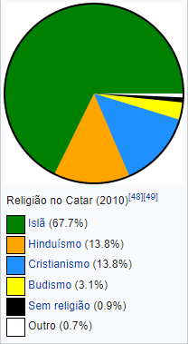

Localização Geográfica
Saiba tudo sobre País que será anfitrião da copa do Mundo 2022
Atualizado em 24/Abril/2022
Origem do País sede da Copa do Mundo FIFA 2022
É um país árabe, conhecido oficialmente como um emirado do Oriente Médio, ocupando a pequena Península do Catar na costa nordeste da Península Arábica. Faz fronteira com a Arábia Saudita ao sul, e o Golfo Pérsico envolve o resto do país. Um estreito do Golfo Pérsico separa o Catar da nação insular vizinha, o Bahrein.
O Catar é um emirado absolutista e hereditário comandado pela Casa de Thani desde meados do século XIX. As posições mais importantes no país são ocupadas por membros ou grupos próximos da família al-Thani. Em 1995, o xeque Hamad bin Khalifa Al Thani tornou-se emir após depor seu pai, Khalifa bin Hamad al Thani, em um golpe de Estado.
Fifa World Cup 2022
Uma nova maneira de ver o mundo.
População
Com uma população estimada em 2,8 milhões de habitantes, apenas 313 mil são nativos catarianos. Os demais são trabalhadores estrangeiros, especialmente de outras nações árabes (13%), Subcontinente indiano (Índia 24%, Nepal 16%, Bangladesh 5%, Paquistão 4%, Sri Lanka 2%), Sudeste Asiático (Filipinas 11%) e demais países (7%). Também é um dos poucos países do mundo em que seus cidadãos não pagam impostos.
Localização Geográfica
A península do Catar se projeta por 160 quilômetros no Golfo Pérsico, ao norte da Arábia Saudita. Encontra-se entre as latitudes 24° e 27°N e longitudes 50° e 52°E. A maioria do país é composta por uma planície árida baixa e coberta de areia. A sudeste encontra-se o Khor al Adaid ("mar interior"), uma área de dunas de areia que cercam uma entrada do Golfo. Há invernos amenos e verões muito quentes e úmidos.
O ponto mais alto no Qatar é Qurayn Abu al Bawl, com 103 metros de altura. No Jebel Dukhan, a oeste, há uma série de afloramentos baixos de calcário no sentido norte-sul a partir Zikrit, através de Umm Bab. A área de Jebel Dukhan também contém as principais jazidas terrestres de petróleo do país, enquanto os campos de gás natural se encontram no mar, a noroeste da península.
Imagem de Satélite
Atividades Economicas e Riquezas
Foi um protetorado britânico até ganhar a independência em 1971. Desde então, tornou-se um dos estados mais ricos da região, devido às receitas oriundas do petróleo e do gás natural (possui a terceira maior reserva mundial de gás). Antes da descoberta do petróleo, sua economia era baseada principalmente para a extração de pérolas e comércio marítimo. Atualmente, lidera a lista dos países mais ricos do mundo pela revista Forbes e está classificado em 41º lugar (logo após Portugal) na lista das Nações Unidas de países com maior desenvolvimento humano (IDH), e em 3° no mundo árabe. A Freedom House considera o país "não livre". A Amnistia Internacional anota vários atropelos de direitos humanos. Desde a primeira Guerra do Golfo, tem sido um importante aliado militar dos Estados Unidos e atualmente abriga a sede do Comando Central da superpotência na região.
Religião
O islã sunita é a religião predominante e oficial do Catar. A maioria dos cidadãos pertencem ao movimento salafista do islã sunita, Com cerca de 5% de seguidores do islã xiita. De acordo o censo de 2004, 71,5% da população são muçulmanos sunitas e cerca de 5% são muçulmanos xiitas, 8,5% são estrangeiros cristãos e 10% são "outras" religiões estrangeiras. A lei xaria é a principal fonte da legislação do Catar de acordo com a Constituição.
Em 2010, a afiliação religiosa no país foi estimada pelo Pew Research Center como 67,7% de muçulmanos, 13,8% de cristãos, 13,8% hindus e 3,1% budistas. Outras religiões e pessoas sem afiliação religiosa representaram os restantes 1,6%.
A população cristã é composta quase inteiramente por estrangeiros; um estudo de 2015 estima que cerca de 200 muçulmanos foram convertidos ao cristianismo. Desde 2008, os cristãos foram autorizados a construir igrejas em terrenos doados pelo governo, mas a atividade missionária estrangeira é desencorajada oficialmente. As igrejas ativas incluem Mar Thoma, Igreja Ortodoxa Siríaca Malankara, Igreja Católica de Nossa Senhora do Rosário e a Igreja Anglicana da Epifania.
Há também duas alas mórmons. Apesar de serem uma parcela significativa da população, hindus e budistas não tem um lugar oficial de culto.
